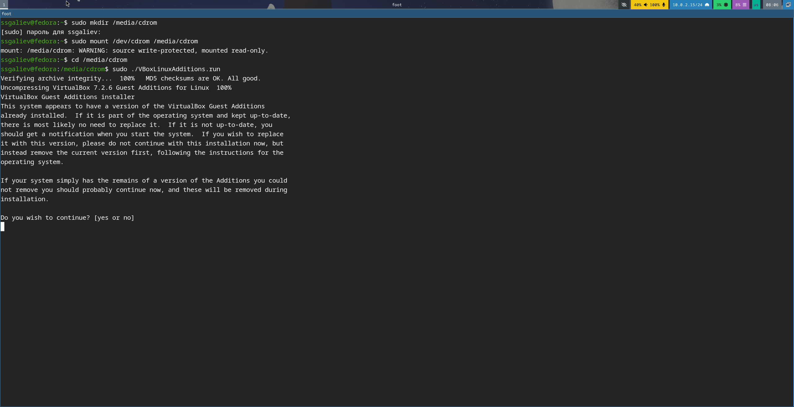
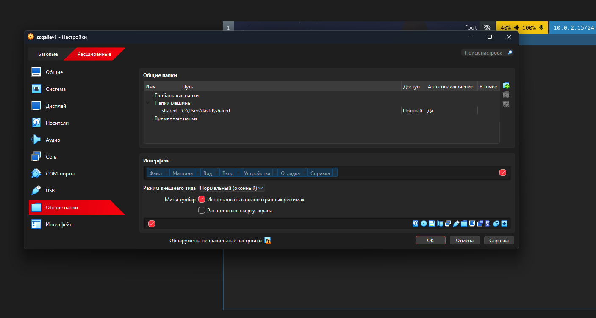
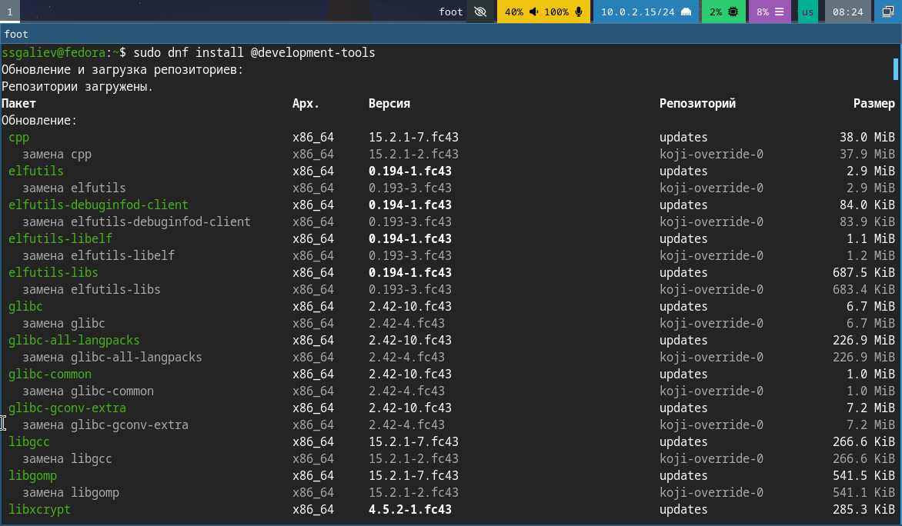
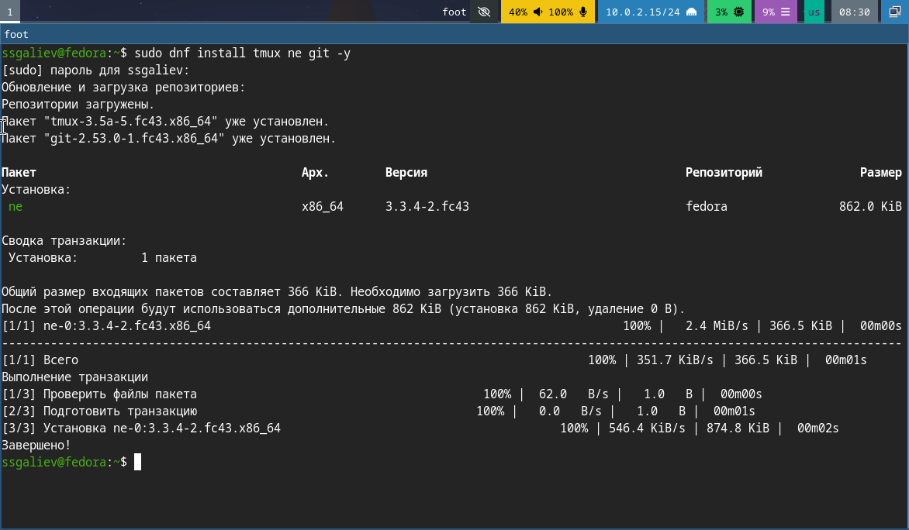
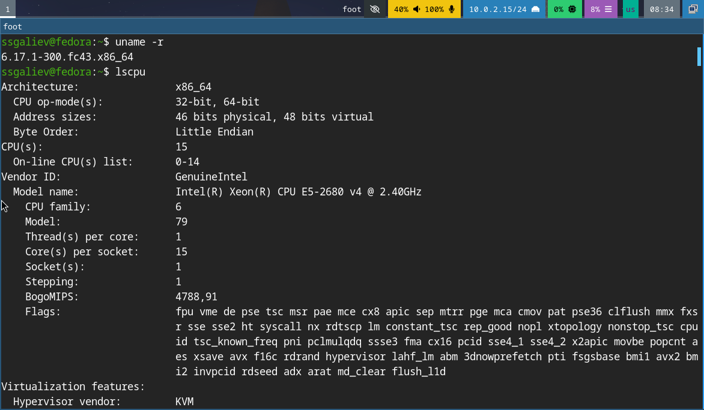
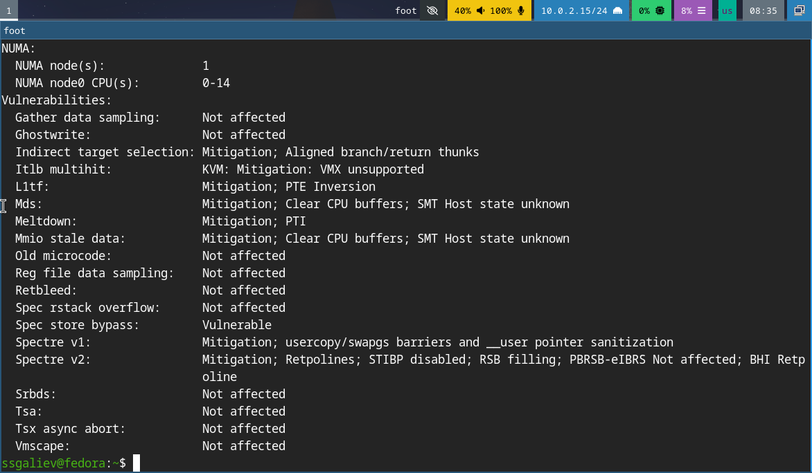
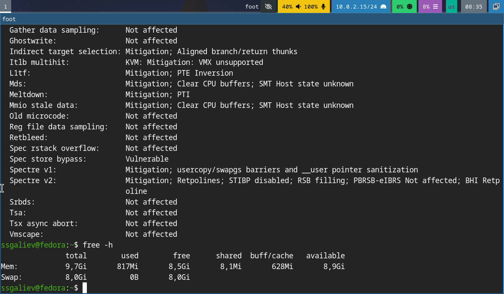
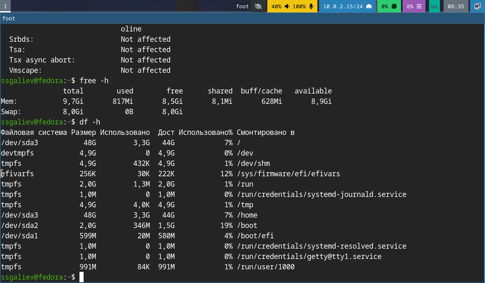

Установка операционной системы на виртуальную машину
true
today


Это нужно для того, чтобы был обмен файлами между хостом и ВМ, автоматическое монтирование, полный доступ к папке





Что содержит учётная запись пользователя? Какие команды терминала вы знаете? Что такое файловая система? Как посмотреть смонтированные ФС? Как удалить зависший процесс?
Используйте EFI для современных ОС Выделяйте достаточно памяти (минимум 4 ГБ) Устанавливайте Guest Additions сразу после установки ОС Настройте общие папки для удобства работы Регулярно обновляйте систему
Виртуализация — базовый навык современного IT-специалиста Fedora Linux — современный и надёжный дистрибутив Правильная настройка ВМ экономит время в дальнейшем
Контакты: Email: 1032252590@rudn.ru GitHub: @Cobalti